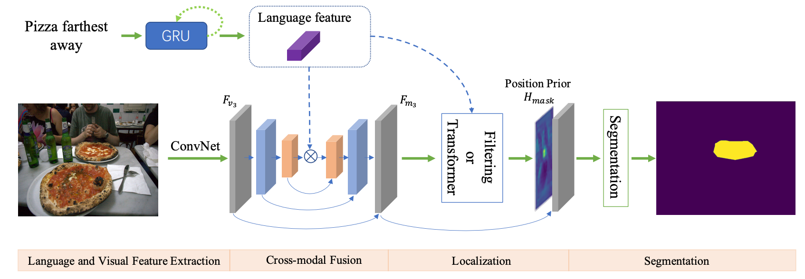
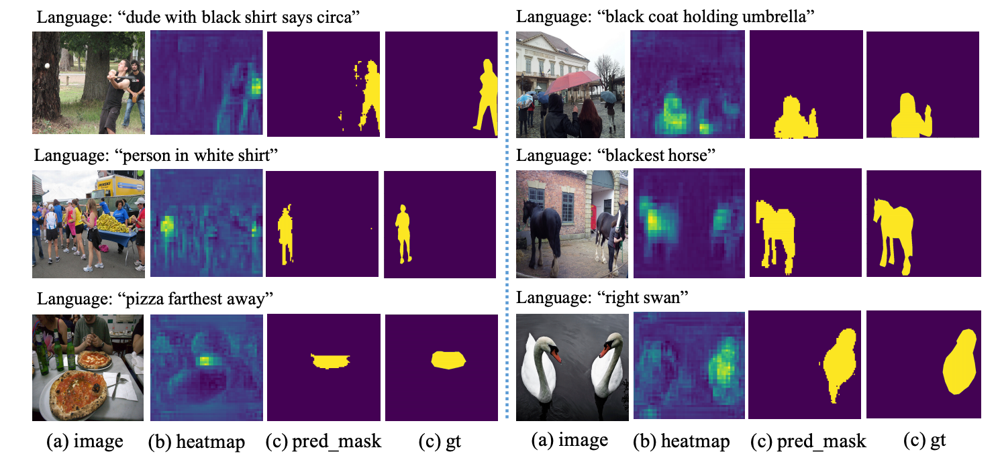

|  |
|  |
@inproceedings{jing2020lts,
title={Locate then Segment: A Strong Pipeline for Referring Image Segmentation},
author={Jing, Ya and Kong, Tao and Wang, Wei and Wang, Liang and Li, Lei and Tan, Tieniu},
booktitle = {The IEEE Conference on Computer Vision and Pattern Recognition (CVPR)},
year={2021}
}